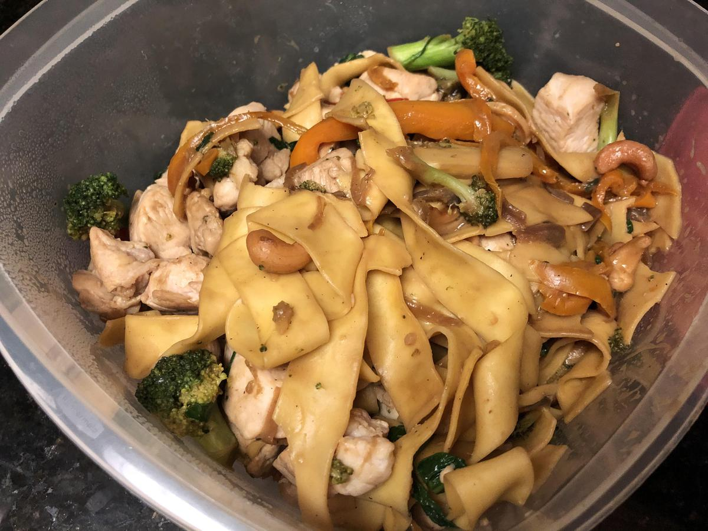

Based on https://www.washingtonpost.com/recipes/ginger-orange-broccoli-and-noodles/17014/
Personal rating: 3 / 5

8 oz dried stir-fry noodles (about 1/2 bag) such as thick stir-fry rice noodles, dragon noodles, etc.
1 Tbsp refined sesame oil, grape, or canola
1/2 large sweet onion, thinly sliced
2 large broccoli crowns (1.5 pounds total), cut into bite-size florets
1/2 large red bell pepper, seeded and thinly sliced
1 yellow bell pepper, seeded and thinly sliced
1/2 cup roasted, unsalted whole cashews
5 Tbsp low-sodium soy sauce
1/2 cup fresh orange juice (from 2 large oranges)
1 Tbsp cornstarch
1 tsp Sriracha
1/4 cup water
2 cloves garlic, thinly sliced
1.5 tsp ground ginger
Chop the vegetables
Start a pot for the noodles and cook in parallel following the package directions (drain when done)
Add oil to a large skillet or saute pan over high heat. Add the onion and stir-fry for 2 minutes until starts to brown
Add the red and yellow bell peppers, broccoli, cashews, and salt. Stir-fry for 5 minutes, or until the thickest broccoli stems are tender and the cashews are slightly blackened
Reduce the heat to low. Add the water, stirring until it evaporates. This helps the pan to cool down. Add the garlic and ginger, then stir-fry for 1 last minute
Whisk together the soy sauce, orange juice, cornstarch, and Sriracha in a medium bowl
Turn off the heat. Add the soy sauce mixture, stirring until it thickens into a glossy sauce
Add the drained noodles and stir gently until everything is evenly coated